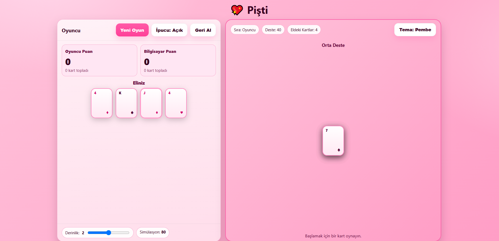

Pişti – Pembe Temalı Rehber
Bu sayfa, Pişti oyununun kurallarını, puanlamasını, stratejilerini ve yapay zekâ yaklaşımlarını derli toplu biçimde sunar.
1) Oyunun Tanımı
Pişti; 52 kartlık standart bir desteyle, genellikle iki oyuncu arasında oynanan, yerdeki kartları rütbe eşleşmesi veya Vale (J) ile toplayarak puan kazanmayı hedefleyen bir kart oyunudur. Amaç, el sonunda en yüksek puanı toplamaktır.
2) Deste, Dağıtım ve Başlangıç
- Deste: Joker kullanılmaz.
- Dağıtım: Her oyuncuya 4'er kart; ortaya desteden 3 kapalı + 1 açık kart bırakılır.
- Oyun Sırası: Oyuncular sırayla birer kart atar. Herkesin 4 kartı bittiğinde tekrar 4'er kart dağıtılır; deste bitince tur kapanır.
3) Kurallar ve Oynanış
- Atılan kartın rütbesi, yerdeki en üst kartın rütbesiyle eşleşirse yerdeki tüm kartlar alınır.
- Vale (J), yerde kart varsa tek başına ortayı alır.
- Yerde tek kart varken eşleşme ya da J ile almak pişti sayılır ve ekstra puan kazandırır.
- Eşleşme yoksa kart yerde kalır ve yığın büyür.
- Deste bittiğinde yerde kalan son yığın, son alan oyuncuya verilir ve puanlar hesaplanır.
4) Puanlama
| Öğe | Puan | Açıklama |
|---|---|---|
| As (A) | +1 | Her As 1 puan eder. |
| Vale (J) | +1 | Her Vale 1 puan eder. |
| ♦10 (karo on) | +3 | Özel yüksek kart. |
| ♣2 (sinek iki) | +2 | Özel yüksek kart. |
| Pişti | +10 | Yerde tek kart varken eşleşme ile alma. |
| Vale ile pişti | +20 | Yerde tek kart varken J ile alma. |
| Son ortayı alma | +3 | Eldeki kartlar bittiğinde yerde kalanlar son alan tarafa verilir. |
| Fazla kart | +3 | Toplam alınan kart sayısı rakipten fazlaysa (varyanta bağlı). |
5) Stratejik İpuçları
- Piştiyi koru: Yerde tek kart bırakacaksan, rakibin o rütbeyi elinde tutma olasılığını hesaba kat.
- Değerli kartları sakla: ♦10 ve ♣2'yi garanti olmayan pozisyonda ortaya bırakma.
- Bilgi takibi: Çıkan As/J sayısını ve görünen rütbeleri takip et.
- J zamanlaması: 20 puanlık J ile pişti nadirdir; doğru ana sakla.
- Son yığın planı: El sonunda son ortayı almak kritik fark yaratabilir.
6) Yapay Zekâ Yaklaşımları
- Basit bot: Alabiliyorsa al; değilse düşük değerli kart bırak.
- Arama tabanlı: Kalan gizli kartları örnekleyip sınırlı derinlikte minimax / alpha–beta uygula.
- Monte Carlo / MCTS: Çok sayıda rastgele tamamlama ile beklenen puanı maksimize et.
- Heuristik değerlendirme: Anlık kazanç, pişti olasılığı, değerli kart kaybı ve son yığın bileşenlerini ağırlıklandır.
7) Kısa Tarihçe
Pişti; Türkiye'de yaygınlaşmış, Basra tipi toplama oyunlarıyla akraba bir kart oyunudur. Bölgesel puanlama farkları bulunabilir; bu rehberde en yaygın kurallar esas alınmıştır.